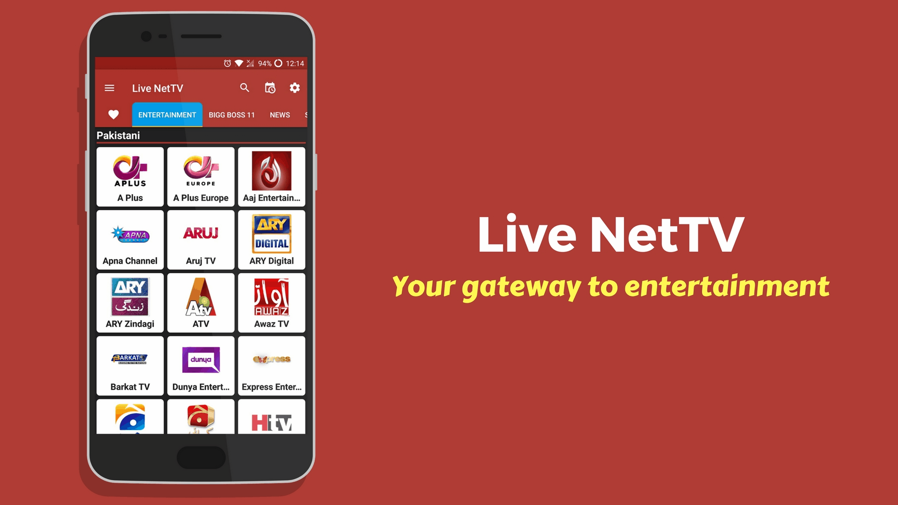

Welcome to the Live NetTV wiki. The only source of pure information and tweaks you can get for using it more efficiently. As the app moto says,”Your gateway to entertainment” is predominately maintained by the application. The current Live NetTV version V4.6 has loads of features like Live Events Schedules, News and more. Download the latest version of livenettv.wiki
The App installation is straightforward and doesn’t take more than a minute to complete. Since it a native android app it works on all the devices that run on Android.

Many users have thought whether installing Live NetTV is safe or not. Here are some of the results from Virustotal and Andrototal that exhibits the file is completely safe and friendly to download and install.
Downloading the app from other unknown sources is not advisable since it might contain adware or malware installed.
In this below in-depth tutorial about Live NetTV, you will be seeing how-to download, install and use the app along with other hidden tweaks.
Contents
Live NetTV APK
Before we begin, first let me give you a quick glimpse of the contents that are present in the app. The Live NetTV App contains 20 categories with a more than 976 Channels. All the Channels Streams are available in High Definition and total of 9 different players to choose with unique functionalities.
It works by capturing the streams that are present in the web and displays in an orderly fashion. You can play by picking any channel you want by selecting the player. Newly introduced Live Events gives you the latest Sports, Racing or even concerts.
First, Download Live NetTV, Install and Start streaming your Favorite TV Channels.
Download Live NetTV APK
| App | Live NetTV |
| Version | v4.6 (30) |
| License | Freemium |
| Updated on | January 11, 2018 |
| Download Size | 13.36 MB |
| App by | RaddixCore |
| App Package | com.streams.androidnettv |
Live NetTV Features
Each feature of the Live NetTV 2018 will be explained in detail below.
Favourites – To make any channel as your favorites, just tap and hold on them and a pop-up arises, Tap on the “Add to Favourites” to save the channel. Now you can find the List of all Channels in the Favourites ♥ Tab. To remove the channel again, tap and hold then select “Remove from Favourites“.
Live Events – Accessing Live Events can be done in two ways – By tapping on the Schedule (📅) icon on Home Screen or Tap on the Menu and “Live Events” option.
In it displays the matches for the next 3 days in its corresponding tabs. The Schedule gets displayed in the following format.
- Time – Start and End time in GMT. For eg, 00:45 – 02:45 GMT
- Based on your local time zone it displays whether the “Match Over” or “Upcoming”.
- Live Event Category – Football, Tennis, Formula One, Ice Hockey, Darts, Cycling, Award Ceremonies, NBA, NFL, MotoSports, Baseball Etc.
- Location and the teams playing. For eg, Mexico – Copa MX Santos Laguna vs Necaxa.
- Tap on the drop-down list to reveal the Channel that will be streaming the event live. For eg: Watch on Univision Deportes USA. Tap on the start streaming.
Report Channel – If you click on the “Report Channel” option from the menu it displays “In order to report a Channel that is not streaming properly, long press on that channel and click the Channel Reporting.”
Now to report any channel by following the above instructions. It Opens the Report Channel Box, “Add some description about your problems or simply tap on submit” but keep in mind to “Select the specific link” that it is not working from the drop-down box.
Finally, tap on Submit button which will make the Report Submitted Successfully.
Channel Request – Now Open the Menu and tap on the Channel Request. In the Channel Request Box, Just Provide the name of the channel you want. we will try to add it as soon as possible. Type the Channel Name and Tap on Submit button to successfully submit the request.
Search – Tap on the search, then enter the Channel Name. It will display the list of channels that match the search query.
Play with Live NetTV Settings
Lock Settings – This Feature once enabled will protect the settings with a password. If you click on the Settings (gear icon) from the home screen you will be prompted with “Authentication Required” box then enter the password to access it.If you want to disable it tap on it to have unrestricted access to settings.
Password – Set password for category lock.
Hide Countries – It will not show the following countries – Pakistani, Indian, International, United Kingdom, Arabic, Irani(Farsi), Turkish when they are enabled.
Hide Categories – You can hide and protect any number of categories with a password by tapping and selecting the respected category checkbox.
Favourite Tab – Even you can customize your favorite tabs to a specific category or remain it as default.
Video Player – Totally 9 video players are available – MX Player, XYZ Player, 321 Player, Android Player, Web Player, XMTV Player, Web Video Cast Player, BubbleUpnP Player, LocalCast Player. Select any one as default player or tap on “Always Ask” if you still haven’t decided.
Application ID – You current ID is displayed there so tap on it to copy to clipboard and use it for any authentication or verification purpose in the future.
Live NetTV Categories & Channels List
In the below table, you can find few channels in each category, Tap to get the entire Live NetTV Channels List.
| Categories | Channels List |
|---|---|
| Entertainment | CBS Action, TV99 UK, VOX, Watch, Yesterday, Fashion TV, FX, Life Time, NASA TV etc. |
| News | ABC News, BBC World News, RT News USA, Sky Sports, CBSN, CNN, BBC 1, CBS News, RT News, NDTV, FOX News, NBC News etc. |
| Sports | Bein Max 2, beIN Sports 1, Setanta Sports, Sky Mix, Sky Sports, At the Races, BBC 2, Motors TV etc. |
| Thailand | Amarin HD, Cartoon Club, Channel 2, Channel 8, GMM Channel, Good TV, Nation Channel, New Day TV, New18 TV, PPTV HD, Thai CCTV, TV24, True4U etc. |
| Portugal | RTP 1, RTP 2, RTP 3, RTP Acores, RTP Internacional, RTP Maderia, RTP Memoria, TVC 1, TVC 2, TVC 3, TVC, TVI, TVI 24 etc. |
| Movies | Sky Movie Drama&Romance, Sky Movie Family, HBO, Movies Now, Movies Now 2, Ze Action, Zee Cinema etc. |
| South Indian | Asianet ME, Chirithia, Colors Kannada, KTV, Maa Gold, Polimer TV, Sun TV, Sun Life, Surya Music, Suraya TV, Tamil Movies, Udaya TV, Viajy Super, Zee Cinemalu, Tamil Cinema etc. |
| German | ARD 1, AXN(German), Kika TV, N24, NTV, Pro 7, RTL, RTL 2, RTL Nitro, SAT 1, Sky Action, Sky Atlantic, Sky Cinema, Sky Cinema 24, Sky Comedy, Sky Emotion, Super RTL, ZDF TV etc. |
| Filipino | ABS CBN, ABS AZMM, Aksyon TV, Cinema One, CNN Philippines, GMA Life, GMA News, GMA Pinoy TV, INC Tv, K Channel, Kapatid TV5, MYX TV, People Tv, TFC, TV5, UN Tv etc. |
| Australian | 7 Flix, 7 Mate, 7 Two, ABC News 24, AustraliaPlus, Channel 7 HD, Channel 9 Gem, Channel 9 GO, Channel 9 Life, Fox Sports News, Racing.com, SBS One, Sky Racing, Sky 1 Racing, Sky 2 Racing etc. |
| Punjabi | 5AAB Tv, 9x Tashan, A One Music, A One Punjabi, Alpha ETC Punjabi, Ankhila TV Punjab, Britasia, Chardikla Tv, DD Punjabi, Desi Channel, Hamdard Tv, Jus Punjabi, MH1, PBN Music, PrimeAsia, PTC Chakde, PTC News, PTC Punjabi, Sangat, Sikkh TV, Zee Punjabi. |
| Afgan | Afghan Javan, Arezo News, Atv TV, ATN Afghan, Atv TV, Bahar TV, BBC Farsi, Farsi 1, Hewad TV, ImanTv, Jahan Num Tv, Kabul News, Kayhan Tv, Khurshid, Lemar TV, Mitra Tv, Negaah Tv, Noor Tv, ONE Tv, Payam Tv, Rah-e-Farda, Rta News, Rta Tv, Shamshad TV, Sharq TV, Silk Road Tv, Srood TV, Tamdon TV, TOLO News, TOLO TV, UTI TV, Zarin Tv, Zwandoon TV. |
| French | ARTE, BFM TV, Cine Classic, Cine Famiz, Cine FX, D8 Live, France 2, France 3, France 4, France 5, France O, Gulli, L’Equipe 21, M6 Live, NT1 Live, OCS Choc, OCS City, OCS Max, RMC Decouverte, RTL9 HD, RTS Deux, RTS UN, TCM Cinema, TF1, W9 Live, Yvelines premiere. |
| Documentary | Animal Plane, Discovery Channel, History TV18, Invest Discovery, Nat Geo Hindi, NatGeo Wild, National Geographic Channel, Sony BBC Earth, Travel XP, History, NatGeo Wild, Nile Life, beIN iZ, TRT Belgesel |
| Music | 8XM Music, Ary Musik, Jalwa TV, Oxygene, Star Max, 9X Jalwa, 9X Jhakaas, 9XM, 9XOZing, Zoom, Zee ETC, Music India, Desi Beats, Eska TV, 1HD Music, Polo TV, RBL TV, Aghani TV, PMC, Rotana Clip, Kral Pop, Kral TV, Power Turk TV, TRT Muzik. |
| Bangla | 24 GHanta, ABP Ananda, AI Tanzil TV, Asian TV, ATN Music, Bangla TV, Bangla TV UK, Bioy, BTV, Channel 9, DBC News, Deepto TV, Dhoom Music, Besh TV, Dawah TV, Ekushey T, Jamuna TV, Maasranga |
| Nepal | ABC News, AP1 HD, Avenues Tv, Hmalata Tv, Image Tv, Kantipur Nepal, Mountain TV, Nepal 1 TV, Mews 24, Vision Nepal, TV Filmy |
| Kids | Disney CHannel, Maha Cartoon, Pogo TV, Sonic Kids, CBBC, Boomerang, Cbeebies, Disney HD, Pop, Talking Tom, Baby TV, Nick Toons, Jeem TV, Micvke TV, Ge, junior, Minika Go, Planet Cocuk. |
| Cooking | ARY Zauq, Masala TV, Zaiqa TV, Food Food, Fyi TV 18, Living Foodz, Zee Living, Food network. |
| Religious | Ahlebait TV, Ahlubayt TV, Al Majd quran, ARY QTV, Hadi V, Madani Channels, Madina Live, Peace TV, Noor TV, Paigham TV, Safeer TV, Tehzee TV, Weasul Urudu, Zain Channel, Asatha TV, Ahad TV, Emmanuel TV, Hope Channel, Huda TV, Makkah TV, MTA TV, Al Resalah TV, Assdissma, Rotan Khalijia, Saudi 1. |
Still, want to know the number of channels per country available in the latest version. Below is the infographic that gives you the exact number of channels available in live nettv for each individual category and country.
- The First Graph represents the Number of Channels in each category( Categories are highlighted in different color) Tap on it to know the Channels.
- The Second Graph describes total channels available in a particular country with a new addition made each day.
Steps to Install Live NetTV on Android
Before we begin to download and install Live Net TV App, Follow the instructions below to completely install the app.
Enable Apps from Unknown Sources
This feature enables installation of 3rd party apps like Live NetTV Apk that is not available in your Google Play Store.
- Open the Settings from the Application drawer.
- Then directly scroll down to find the Security Option.
- Under the Device Administration tab, Tap on the “Apps from Unknown Sources” to enable it.
- A pop-up dialog box appears on the screen, Tap on OK button to proceed with the next steps.
Download Live NetTV
- In order to download Live NetTV, Tap here to download.
- Once the download process is completed. Open the downloads folder or the respective directory containing the file.
- Navigate and Tap on the Live NetTV App. Then press the INSTALL Button.
- The installation process won’t take too long, Tap on the OPEN Button once it’s finished.
- Now you can start streaming the Live TV Channels directly on your smartphone.
Supported Platforms and Devices
| Devices | Platforms |
|---|---|
| Live NetTV for PC | Windows |
| Live NetTV on Firestick | Amazon Fire OS |
| Live NetTV on Android Box | Android |
Future Releases
| Devices | Platforms |
|---|---|
| Live NetTV for iPhone/iPad | iOS |
| Live NetTV on Kodi | Kodi |
Live NetTV User guide (How-to)
If you have got here then you have successfully installed Live NetTV. Now let me give you the most efficient way to use the app from my personal experience.
- Open Live NetTV App.
- To Find your favorite Channel make a quick search by tapping on the Search icon.
- Else Scroll left or right by tapping and holding on the Categories.
- Once you have found your favorite channel, For Eg: A Plus. Its under Entertainment -> Pakistani -> A Plus.
- Quicky tap on the Channel, A popup arise saying, “We have got multiple links for A plus. Please select one” so tap on Link 1 or Link 2. This usually comes from channels with more than one link.
- After Tapping “Link 1“, Choose Player popup arise if you had set the Video player to “Always Ask” else it will start to stream with the player selected.
- I will go ahead and Select “MX Player” then tap on Just Once.
- Now the stream will start playing.
The above method is pretty simple and straightforward to use.
How to Update Live Net TV
Live NetTV Update can be done through two ways,
- Update Via App (Automatic Updates)
- Update Manually.
Updating Via App – One can Automatically update Live NetTV, When a new version of the app is released it shows a popup saying “Update Available“.
After reading the entire message, tap on “UPDATE NOW“. It will begin to download and after successful completion. Tap on the INSTALL button on the installation page to finish installing the upgrade.
Tap on the OPEN button to use the updated version without no data being erased from the older version.
Drawbacks: The Updates are rolled step-by-step for each device so we won’t be able to predict when you will be exactly getting the notification of updates. That’s why we prefer the next method to our users.
Update Manually – Live NetTV can be updated manually i.e almost similar to that installing the app. To get latest version updates subscribe to our notification and we will be sending you instant notification as soon as the new version releases. Go to the livenettv official site and you will be getting the current latest version of Live NetTV on your device. Install the app and start using it.
The above guide covers every Live NetTV features, usage and installation methods in detail. So if you are facing any difficulties or having any suggestions or queries drop in the comment section below. Feel Free to respond.